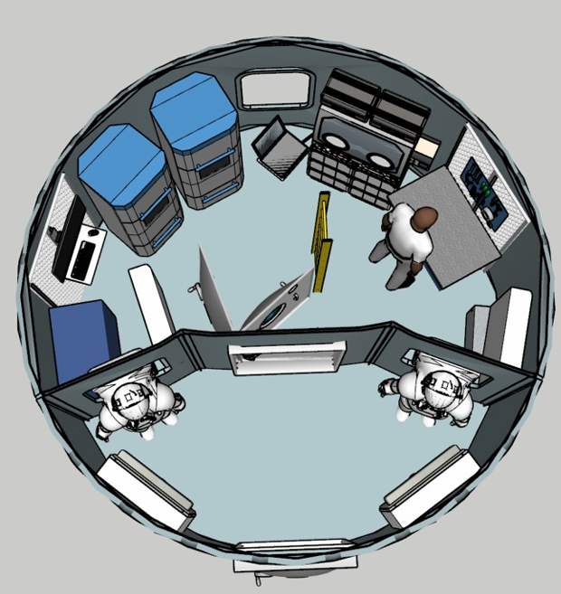
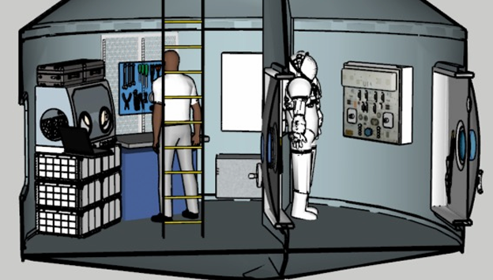

Home
Housing
Laboratory
Suitports
Dedicated spaces for scientific research in geology, biology, medicine, and engineering—supporting discovery, crew health, and long-term survival on Mars.
 NASA’s Perseverance rover found that Jezero Crater experienced multiple fluid‐alteration episodes, shifting from acidic to more alkaline conditions—some periods likely better suited for life.
The Curiosity rover detected long-chain organic compounds (decane, undecane, dodecane) in ~3.7 billion-year-old mudstone from Yellowknife Bay, which may be remnants of fatty acids.
Research suggests that thick crustal regions (particularly southern highlands) may have generated granitic magmas and supported large subsurface aquifers (~3–4 billion years ago).
2. Discovery of Large Organic Molecules in Ancient
Rock (Gale Crater)
3. Hidden Water Reservoirs & Rare Magmas in
Ancient Mars Crust
1. Evidence of Habitability at Jezero Crater